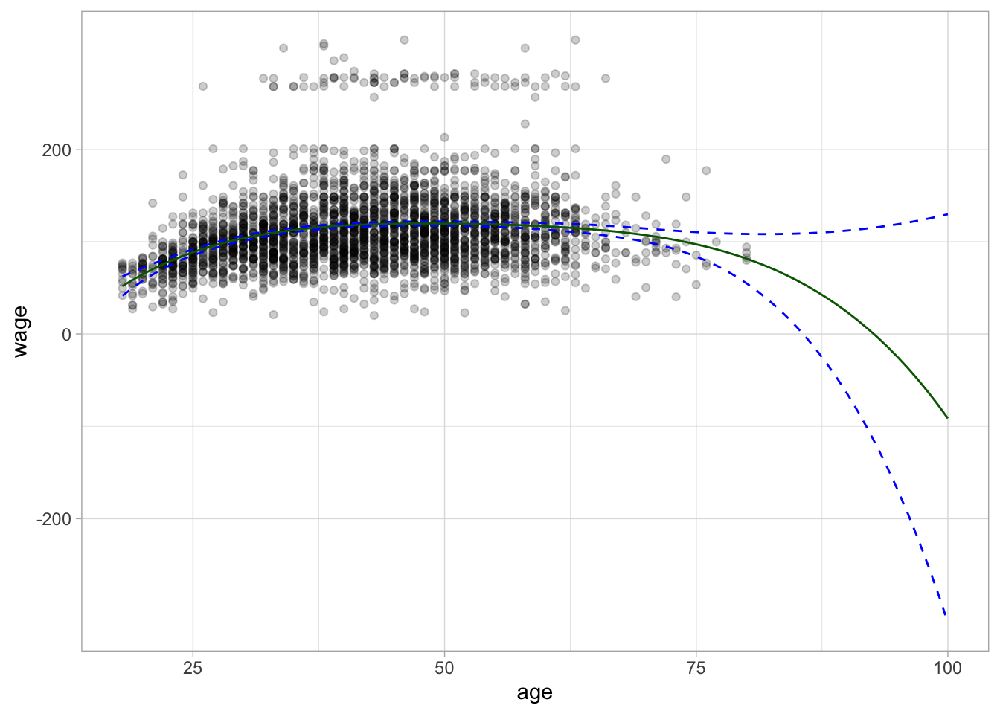
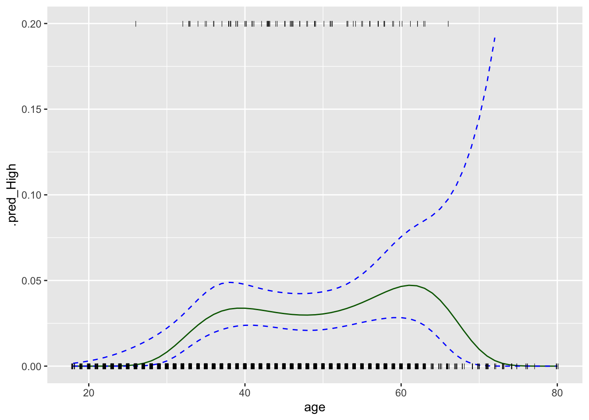
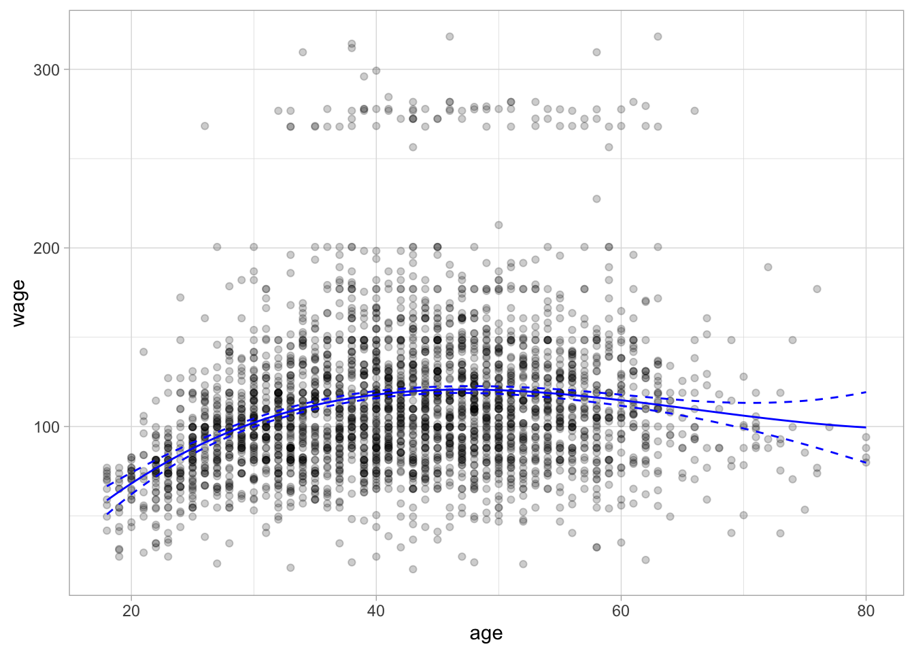

7 Moving Beyond Linearity
This lab will look at the various ways we can introduce non-linearity into our model by doing preprocessing. Methods include: polynomials expansion, step functions, and splines.
The GAMs section is WIP since they are now supported in parsnip.
This chapter will use parsnip for model fitting and recipes and workflows to perform the transformations.
library(tidymodels)
library(ISLR)
Wage <- as_tibble(Wage)7.1 Polynomial Regression and Step Functions
Polynomial regression can be thought of as doing polynomial expansion on a variable and passing that expansion into a linear regression model. We will be very explicit in this formulation in this chapter. step_poly() allows us to do a polynomial expansion on one or more variables.
The following step will take age and replace it with the variables age, age^2, age^3, and age^4 since we set degree = 4.
rec_poly <- recipe(wage ~ age, data = Wage) %>%
step_poly(age, degree = 4)This recipe is combined with a linear regression specification and combined to create a workflow object.
lm_spec <- linear_reg() %>%
set_mode("regression") %>%
set_engine("lm")
poly_wf <- workflow() %>%
add_model(lm_spec) %>%
add_recipe(rec_poly)This object can now be fit()
poly_fit <- fit(poly_wf, data = Wage)
poly_fit══ Workflow [trained] ══════════════════════════════════════════════════════════
Preprocessor: Recipe
Model: linear_reg()
── Preprocessor ────────────────────────────────────────────────────────────────
1 Recipe Step
• step_poly()
── Model ───────────────────────────────────────────────────────────────────────
Call:
stats::lm(formula = ..y ~ ., data = data)
Coefficients:
(Intercept) age_poly_1 age_poly_2 age_poly_3 age_poly_4
111.70 447.07 -478.32 125.52 -77.91 And we cal pull the coefficients using tidy()
tidy(poly_fit)# A tibble: 5 × 5
term estimate std.error statistic p.value
<chr> <dbl> <dbl> <dbl> <dbl>
1 (Intercept) 112. 0.729 153. 0
2 age_poly_1 447. 39.9 11.2 1.48e-28
3 age_poly_2 -478. 39.9 -12.0 2.36e-32
4 age_poly_3 126. 39.9 3.14 1.68e- 3
5 age_poly_4 -77.9 39.9 -1.95 5.10e- 2I was lying when I said that step_poly() returned age, age^2, age^3, and age^4. What is happening is that it returns variables that are a basis of orthogonal polynomials, which means that each of the columns is a linear combination of the variables age, age^2, age^3, and age^4. We can see this by using poly() directly with raw = FALSE since it is the default
poly(1:6, degree = 4, raw = FALSE) 1 2 3 4
[1,] -0.5976143 0.5455447 -0.3726780 0.1889822
[2,] -0.3585686 -0.1091089 0.5217492 -0.5669467
[3,] -0.1195229 -0.4364358 0.2981424 0.3779645
[4,] 0.1195229 -0.4364358 -0.2981424 0.3779645
[5,] 0.3585686 -0.1091089 -0.5217492 -0.5669467
[6,] 0.5976143 0.5455447 0.3726780 0.1889822
attr(,"coefs")
attr(,"coefs")$alpha
[1] 3.5 3.5 3.5 3.5
attr(,"coefs")$norm2
[1] 1.00000 6.00000 17.50000 37.33333 64.80000 82.28571
attr(,"degree")
[1] 1 2 3 4
attr(,"class")
[1] "poly" "matrix"We see that these variables don’t directly have a format we would have assumed. But this is still a well-reasoned transformation. We can get the raw polynomial transformation by setting raw = TRUE
poly(1:6, degree = 4, raw = TRUE) 1 2 3 4
[1,] 1 1 1 1
[2,] 2 4 8 16
[3,] 3 9 27 81
[4,] 4 16 64 256
[5,] 5 25 125 625
[6,] 6 36 216 1296
attr(,"degree")
[1] 1 2 3 4
attr(,"class")
[1] "poly" "matrix"These transformations align with what we would expect. It is still recommended to stick with the default of raw = FALSE unless you have a reason not to do that. One of the benefits of using raw = FALSE is that the resulting variables are uncorrelated which is a desirable quality when using a linear regression model.
You can get the raw polynomials by setting options = list(raw = TRUE) in step_poly()
rec_raw_poly <- recipe(wage ~ age, data = Wage) %>%
step_poly(age, degree = 4, options = list(raw = TRUE))
raw_poly_wf <- workflow() %>%
add_model(lm_spec) %>%
add_recipe(rec_raw_poly)
raw_poly_fit <- fit(raw_poly_wf, data = Wage)
tidy(raw_poly_fit)# A tibble: 5 × 5
term estimate std.error statistic p.value
<chr> <dbl> <dbl> <dbl> <dbl>
1 (Intercept) -184. 60.0 -3.07 0.00218
2 age_poly_1 21.2 5.89 3.61 0.000312
3 age_poly_2 -0.564 0.206 -2.74 0.00626
4 age_poly_3 0.00681 0.00307 2.22 0.0264
5 age_poly_4 -0.0000320 0.0000164 -1.95 0.0510 Let us try something new and visualize the polynomial fit on our data. We can do this easily because we only have 1 predictor and 1 response. Starting with creating a tibble with different ranges of age. Then we take this tibble and predict with it, this will give us the repression curve. We are additionally adding confidence intervals by setting type = "conf_int" which we can do since we are using a linear regression model.
age_range <- tibble(age = seq(min(Wage$age), max(Wage$age)))
regression_lines <- bind_cols(
augment(poly_fit, new_data = age_range),
predict(poly_fit, new_data = age_range, type = "conf_int")
)
regression_lines# A tibble: 63 × 4
age .pred .pred_lower .pred_upper
<int> <dbl> <dbl> <dbl>
1 18 51.9 41.5 62.3
2 19 58.5 49.9 67.1
3 20 64.6 57.5 71.6
4 21 70.2 64.4 76.0
5 22 75.4 70.5 80.2
6 23 80.1 76.0 84.2
7 24 84.5 80.9 88.1
8 25 88.5 85.2 91.7
9 26 92.1 89.1 95.2
10 27 95.4 92.5 98.4
# … with 53 more rowsWe will then use ggplot2 to visualize the fitted line and confidence interval. The green line is the regression curve and the dashed blue lines are the confidence interval.
Wage %>%
ggplot(aes(age, wage)) +
geom_point(alpha = 0.2) +
geom_line(aes(y = .pred), color = "darkgreen",
data = regression_lines) +
geom_line(aes(y = .pred_lower), data = regression_lines,
linetype = "dashed", color = "blue") +
geom_line(aes(y = .pred_upper), data = regression_lines,
linetype = "dashed", color = "blue")
The regression curve is now a curve instead of a line as we would have gotten with a simple linear regression model. Notice furthermore that the confidence bands are tighter when there is a lot of data and they wider towards the ends of the data.
Let us take that one step further and see what happens to the regression line once we go past the domain it was trained on. the previous plot showed individuals within the age range 18-80. Let us see what happens once we push this to 18-100. This is not an impossible range but an unrealistic range.
wide_age_range <- tibble(age = seq(18, 100))
regression_lines <- bind_cols(
augment(poly_fit, new_data = wide_age_range),
predict(poly_fit, new_data = wide_age_range, type = "conf_int")
)
Wage %>%
ggplot(aes(age, wage)) +
geom_point(alpha = 0.2) +
geom_line(aes(y = .pred), color = "darkgreen",
data = regression_lines) +
geom_line(aes(y = .pred_lower), data = regression_lines,
linetype = "dashed", color = "blue") +
geom_line(aes(y = .pred_upper), data = regression_lines,
linetype = "dashed", color = "blue")
And we see that the curve starts diverging once we get to 93 the predicted wage is negative. The confidence bands also get wider and wider as we get farther away from the data.
We can also think of this problem as a classification problem, and we will do that just now by setting us the task of predicting whether an individual earns more than $250000 per year. We will add a new factor value denoting this response.
We cannot use the polynomial expansion recipe rec_poly we created earlier since it had wage as the response and now we want to have high as the response. We also have to create a logistic regression specification that we will use as our classification model.
rec_poly <- recipe(high ~ age, data = Wage) %>%
step_poly(age, degree = 4)
lr_spec <- logistic_reg() %>%
set_engine("glm") %>%
set_mode("classification")
lr_poly_wf <- workflow() %>%
add_model(lr_spec) %>%
add_recipe(rec_poly)This polynomial logistic regression model workflow can now be fit and predicted with as usual.
lr_poly_fit <- fit(lr_poly_wf, data = Wage)
predict(lr_poly_fit, new_data = Wage)# A tibble: 3,000 × 1
.pred_class
<fct>
1 Low
2 Low
3 Low
4 Low
5 Low
6 Low
7 Low
8 Low
9 Low
10 Low
# … with 2,990 more rowsIf we want we can also get back the underlying probability predictions for the two classes, and their confidence intervals for these probability predictions by setting type = "prob" and type = "conf_int".
predict(lr_poly_fit, new_data = Wage, type = "prob")# A tibble: 3,000 × 2
.pred_High .pred_Low
<dbl> <dbl>
1 0.00000000983 1.00
2 0.000120 1.00
3 0.0307 0.969
4 0.0320 0.968
5 0.0305 0.970
6 0.0352 0.965
7 0.0313 0.969
8 0.00820 0.992
9 0.0334 0.967
10 0.0323 0.968
# … with 2,990 more rowspredict(lr_poly_fit, new_data = Wage, type = "conf_int")# A tibble: 3,000 × 4
.pred_lower_High .pred_upper_High .pred_lower_Low .pred_upper_Low
<dbl> <dbl> <dbl> <dbl>
1 2.22e-16 0.00166 0.998 1
2 1.82e- 6 0.00786 0.992 1.00
3 2.19e- 2 0.0428 0.957 0.978
4 2.31e- 2 0.0442 0.956 0.977
5 2.13e- 2 0.0434 0.957 0.979
6 2.45e- 2 0.0503 0.950 0.975
7 2.25e- 2 0.0434 0.957 0.977
8 3.01e- 3 0.0222 0.978 0.997
9 2.39e- 2 0.0465 0.953 0.976
10 2.26e- 2 0.0458 0.954 0.977
# … with 2,990 more rowsWe can use these to visualize the probability curve for the classification model.
regression_lines <- bind_cols(
augment(lr_poly_fit, new_data = age_range, type = "prob"),
predict(lr_poly_fit, new_data = age_range, type = "conf_int")
)
regression_lines %>%
ggplot(aes(age)) +
ylim(c(0, 0.2)) +
geom_line(aes(y = .pred_High), color = "darkgreen") +
geom_line(aes(y = .pred_lower_High), color = "blue", linetype = "dashed") +
geom_line(aes(y = .pred_upper_High), color = "blue", linetype = "dashed") +
geom_jitter(aes(y = (high == "High") / 5), data = Wage,
shape = "|", height = 0, width = 0.2)Warning: Removed 8 row(s) containing missing values (geom_path).
Next, let us take a look at the step function and how to fit a model using it as a preprocessor. You can create step functions in a couple of different ways. step_discretize() will convert a numeric variable into a factor variable with n bins, n here is specified with num_breaks. These will have approximately the same number of points in them according to the training data set.
rec_discretize <- recipe(high ~ age, data = Wage) %>%
step_discretize(age, num_breaks = 4)
discretize_wf <- workflow() %>%
add_model(lr_spec) %>%
add_recipe(rec_discretize)
discretize_fit <- fit(discretize_wf, data = Wage)
discretize_fit══ Workflow [trained] ══════════════════════════════════════════════════════════
Preprocessor: Recipe
Model: logistic_reg()
── Preprocessor ────────────────────────────────────────────────────────────────
1 Recipe Step
• step_discretize()
── Model ───────────────────────────────────────────────────────────────────────
Call: stats::glm(formula = ..y ~ ., family = stats::binomial, data = data)
Coefficients:
(Intercept) agebin2 agebin3 agebin4
5.004 -1.492 -1.665 -1.705
Degrees of Freedom: 2999 Total (i.e. Null); 2996 Residual
Null Deviance: 730.5
Residual Deviance: 710.4 AIC: 718.4If you already know where you want the step function to break then you can use step_cut() and supply the breaks manually.
rec_cut <- recipe(high ~ age, data = Wage) %>%
step_cut(age, breaks = c(30, 50, 70))
cut_wf <- workflow() %>%
add_model(lr_spec) %>%
add_recipe(rec_cut)
cut_fit <- fit(cut_wf, data = Wage)
cut_fit══ Workflow [trained] ══════════════════════════════════════════════════════════
Preprocessor: Recipe
Model: logistic_reg()
── Preprocessor ────────────────────────────────────────────────────────────────
1 Recipe Step
• step_cut()
── Model ───────────────────────────────────────────────────────────────────────
Call: stats::glm(formula = ..y ~ ., family = stats::binomial, data = data)
Coefficients:
(Intercept) age(30,50] age(50,70] age(70,80]
6.256 -2.746 -3.038 10.310
Degrees of Freedom: 2999 Total (i.e. Null); 2996 Residual
Null Deviance: 730.5
Residual Deviance: 704.3 AIC: 712.37.2 Splines
In order to fit regression splines, or in other words, use splines as preprocessors when fitting a linear model, we use step_bs() to construct the matrices of basis functions. The bs() function is used and arguments such as knots can be passed to bs() by using passing a named list to options.
rec_spline <- recipe(wage ~ age, data = Wage) %>%
step_bs(age, options = list(knots = 25, 40, 60))We already have the linear regression specification lm_spec so we can create the workflow, fit the model and predict with it like we have seen how to do in the previous chapters.
spline_wf <- workflow() %>%
add_model(lm_spec) %>%
add_recipe(rec_spline)
spline_fit <- fit(spline_wf, data = Wage)
predict(spline_fit, new_data = Wage)# A tibble: 3,000 × 1
.pred
<dbl>
1 58.7
2 84.3
3 120.
4 120.
5 120.
6 119.
7 120.
8 102.
9 119.
10 120.
# … with 2,990 more rowsLastly, we can plot the basic spline on top of the data.
regression_lines <- bind_cols(
augment(spline_fit, new_data = age_range),
predict(spline_fit, new_data = age_range, type = "conf_int")
)
Wage %>%
ggplot(aes(age, wage)) +
geom_point(alpha = 0.2) +
geom_line(aes(y = .pred), data = regression_lines, color = "blue") +
geom_line(aes(y = .pred_lower), data = regression_lines,
linetype = "dashed", color = "blue") +
geom_line(aes(y = .pred_upper), data = regression_lines,
linetype = "dashed", color = "blue")
7.3 GAMs
GAM section is WIP since they are now supported in parsnip.